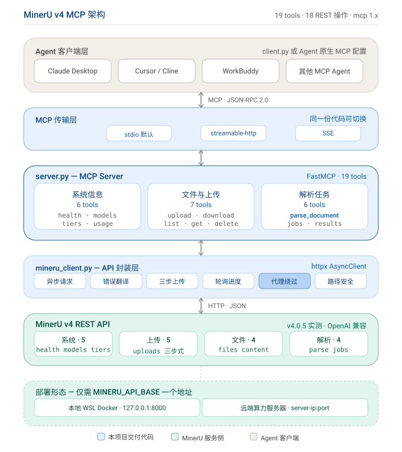

| 层 | 组件 | 职责 |
|---|---|---|
| 1 · Agent 客户端层 | Claude Desktop / Cursor / Cline / WorkBuddy，或 client.py | 发起 MCP 调用 |
| 2 · MCP 传输层 | stdio（默认）/ streamable-http / SSE | JSON-RPC 2.0 承载 |
| 3 · MCP Server | server.py（FastMCP，19 tools） | 工具编排、参数校验、结构化返回 |
| 4 · API 封装层 | mineru_client.py（httpx AsyncClient） | 异步请求、错误翻译、三步上传、轮询、代理绕过、路径安全 |
| 5 · MinerU v4 REST API | 18 操作：系统 5 / 上传 5 / 文件 4 / 解析 4 | 实际解析引擎（实测 v4.0.5） |
| 6 · 部署形态 | 本地 WSL Docker 或远端算力服务器 | 仅切换 MINERU_API_BASE |